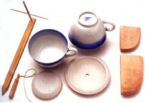

Articles Tools
and Tool Making for Porcelain With the making of porcelain in an Oriental way, pieces are designed and made in relation to the inside shape of the ware. The first part in the design process is to determine the desired shape and size of the finished article. This is usually drawn to scale. But because of the high shrinkage involved with porcelain, it is necessary to expand this drawing by 17 percent to have the accurate measurements in which to design your tools. In the design process it is also important to consider the practicality of the shape being made and that there is often some slumping of the shape in the glaze firing which for example, leaves a teapot a little less round than it was initially. Usually, the first tool made is the tonbo (dragonfly) measure. This is the bamboo tool that measures the depth and width of the item being made. The reason for making the tonbo measure first is that the other tools are then made to this measure. Along with the tonbo goes the bamboo knife which attaches to the top of the tombo and is used to trim and clean the rim of pieces as well as for cutting the item from the wheel head in some instances. A bamboo knife can be sharp, so treat it with respect. There are usually two types of throwing rib used: the hera and the kote. The kote is the initial throwing rib and is usually made from a fine grained softwood (such as huon pine or celery top pine) and about the thickness of one's finger. This throwing rib is slightly smaller than the hera which is the final shaping tool and is made from hard fine timber such as pear or cherry wood, cut as a thin plank and tapered to a fine edge which is polished to impart the finish to the inside surface of what you are making. Another tool that has multiple uses is the dango. This is made from similar wood to the kote but is usually much thicker and is used to beat the inside base of large pots to tighten the clay and help prevent cracking of the base. It is also used instead of the hand inside to help throw large pots. It gives a smooth surface to the inside of a vessel rather than leaving the marks of the fingers. It is not easy to describe the shapes and the difficulties of making such tools; it is an art best learnt under the watchful eyes of a master or in a workshop situation. Nevertheless, much can be discovered through trial, error and correction, once the basic principles are understood. Next Page> Testing Your Tools |
|
| © Ceramics Today |